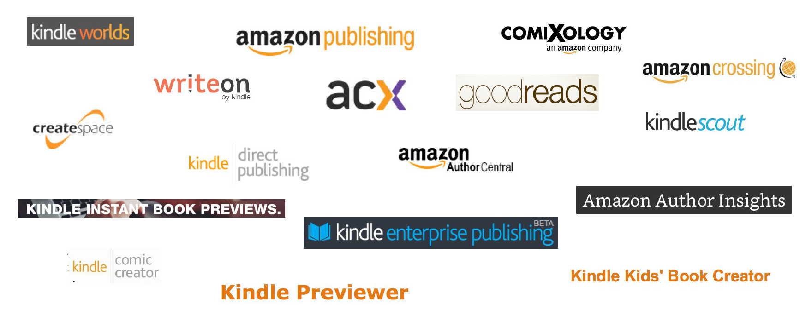

Kindle Author and Publishing Tools
Duration:
3 months
Type:
Summer Internship
Overview
Over the summer of 2016, I worked with the Author and Publishing tools team. The team was working on designing a unified author experience for their products and services and my project was aligned to that initiative. My work inovlved understanding an author's book writing and publishing process and creating an ecosystem map of currently offered tools and services. The next phase involved identifying a gap in the process and designing a solution for the same. I cannot share the final designs of my project as I am bond to an NDA. Please reach to me directly for more information.
Problem
Currently, an author experiences friction in their journey of publishing with Amazon due to the presence of gaps in their workflow with the tools and services we provide leading to a broken experience. Also, there wasn't a clear picture of where those gaps were. The ecosystem map helped provide a 360-degree view on the current offerings and provided opportunity for uncovering new product opportunities.
Design Process
I went through existing research done by the team to understand the current offerings and painpoints of authors. I also interviewed product managers, members from design and product leadership to understand the current ecosystem and an author's book publishing process. This helped me create an ecosystem map and draw some insights from it.
Current Offerings
Ecosystem Map
Team brainstorm
In the next phase of discovery, I participated in a brainstorm activity with fellow designers to uncover gaps in the process. In the activity, everyone was provided with the ecosystem map and were given about 10-15 minutes of personal brainstorm time to come up with gaps. Next, all of us got together to share our outcomes. We created themes from the individually identified gaps. We prioritized the gaps to come up with the most impactful gap.
Conceptualization
Once we had identified the gap, I started ideating by coming up with user stories with the help of design stakeholders. We decided on the key user story I would focus on for my internship project. I also started collaborating with the product stakeholders to define scope for the project. This stage also involved creating a working backwards document where I created a Press Release for the product idea I was working on.
Design and Iteration
In this phase, I set design goals to meet the needs of the users. Meanwhile, I was also refining the user story. Soon, I started evolving my design through sketching, wireframing and feedback loops. Once the wireframes were finalized, I started designing the high-fidelity mockups.
User Testing
In this phase, I tested my designs with authors using guerrilla user testing technique. The designs were tested using a prototype created on InVision. The designs were revised based on the recommendations from the testing.
Deliver
Towards the end of my internship, I handed over my deliverables to the team. The project I was working on has been taken over by a fellow designer to design for other user stories. The MVP for the product is set to be launched by March 2017.